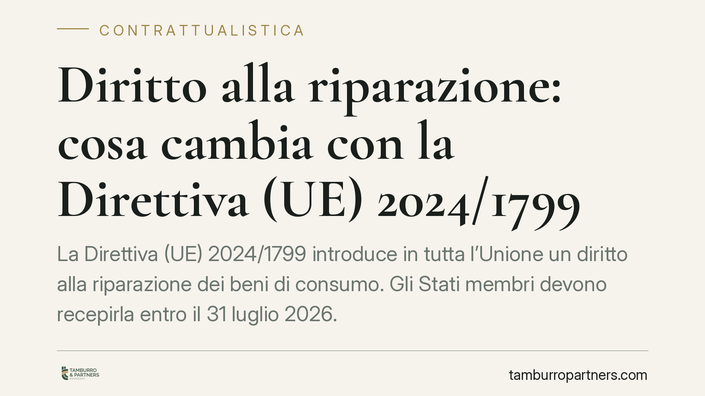

Diritto alla riparazione: cosa cambia con la Direttiva (UE) 2024/1799
La Direttiva (UE) 2024/1799 introduce in tutta l'Unione un diritto alla riparazione dei beni di consumo. Gli Stati membri devono recepirla entro il 31 luglio 2026. In Italia il provvedimento di attuazione non è ancora stato pubblicato: conviene però iniziare a leggere ora il testo europeo, perché modificherà obblighi informativi, garanzie e assistenza post-vendita per produttori e venditori.

Il contesto: una direttiva, non ancora una legge italiana
Il 30 luglio 2024 è entrata in vigore a livello europeo la Direttiva (UE) 2024/1799, nota come *right to repair*. Il provvedimento fissa regole comuni per favorire la riparazione dei beni di consumo come alternativa alla sostituzione.
Un chiarimento necessario, per evitare confusione. La direttiva europea non si applica da sola ai rapporti tra imprese e consumatori: deve essere recepita da ciascuno Stato membro con una norma interna. Il termine per il recepimento è fissato dall'art. 16 della direttiva al 31 luglio 2026. Alla data di questo contributo l'Italia non ha ancora pubblicato il decreto legislativo di attuazione. Qualsiasi data di entrata in vigore interna va quindi considerata con prudenza finché non esce il testo nazionale definitivo.
Inquadramento normativo: cosa è già vigente e cosa arriva
È importante distinguere due piani.
Il primo riguarda la garanzia legale di conformità, già disciplinata dagli artt. 128 e seguenti del Codice del consumo (d.lgs. 206/2005), come riformati dal d.lgs. 170/2021, che ha recepito la direttiva (UE) 2019/771. Qui nulla di nuovo: il consumatore ha già diritto, per i difetti di conformità che si manifestano entro due anni dalla consegna, a riparazione o sostituzione a scelta, salvo i limiti di proporzionalità previsti dall'art. 135-bis.
Il secondo piano è la vera novità della Direttiva (UE) 2024/1799 e opera in larga parte oltre la garanzia legale. In sintesi, il testo europeo prevede:
- un obbligo del produttore di riparare determinati beni, su richiesta del consumatore, anche dopo la scadenza della garanzia legale, quando la riparazione è tecnicamente possibile ai sensi della normativa di prodotto (art. 5);
- l'applicazione a categorie di beni individuate dalla normativa UE sulla progettazione ecocompatibile (ad esempio elettrodomestici come lavatrici, lavastoviglie, frigoriferi, aspirapolvere, smartphone e tablet), con un allegato aggiornabile nel tempo;
- l'obbligo di eseguire la riparazione entro un tempo ragionevole e a un prezzo ragionevole, in modo da non scoraggiare di fatto la richiesta;
- una piattaforma europea online per mettere in contatto consumatori e riparatori;
- un modulo informativo europeo sulla riparazione, che su richiesta rende trasparenti condizioni, tempi e costi.
Sul versante della garanzia legale, la direttiva introduce inoltre un incentivo: quando il consumatore sceglie la riparazione in luogo della sostituzione, il periodo di garanzia è prorogato di dodici mesi rispetto al bene riparato. Questa misura dovrà essere innestata negli artt. 128 ss. dal decreto di recepimento.
Implicazioni pratiche
Per il produttore il cambiamento è strutturale: nasce un obbligo di assistenza alla riparazione che prescinde dalla garanzia e che richiede disponibilità di pezzi di ricambio, listini trasparenti e tempi definiti.
Per il venditore si allarga il perimetro informativo verso il cliente e cambia la gestione dei resi: la riparazione va presentata come opzione reale, non residuale, e la proroga di dodici mesi incide sui tempi di responsabilità.
Per il consumatore aumentano gli strumenti: possibilità di chiedere la riparazione al produttore oltre la garanzia, accesso a informazioni standardizzate su costi e tempi, proroga della garanzia in caso di bene riparato.
Resta fermo che l'estensione esatta di questi obblighi in Italia dipenderà dal testo di recepimento, che potrà precisare categorie di beni, soglie e modalità.
Cosa fare in concreto
- Leggere ora il testo europeo. Scaricare la Direttiva (UE) 2024/1799 e individuare quali prodotti del proprio catalogo rientrano nelle categorie già indicate.
- Mappare la filiera dei ricambi. Verificare disponibilità, tempi di fornitura e capacità di riparazione interne o esterne.
- Rivedere le clausole contrattuali e le condizioni di vendita, con particolare attenzione a garanzia, assistenza post-vendita e informazioni precontrattuali.
- Predisporre modelli informativi coerenti con il modulo europeo sulla riparazione, su tempi e costi.
- Monitorare la Gazzetta Ufficiale per l'uscita del decreto di recepimento italiano, che fisserà date e dettagli operativi.
Nota finale
Contributo informativo a cura di Tamburro & Partners Avvocati - Avv. Giuseppe Tamburro. Non costituisce parere legale.
Ogni contratto ha il suo equilibrio.
Se vuoi una revisione delle clausole o una redazione su misura, scrivi allo studio. Ti rispondiamo entro un giorno lavorativo.